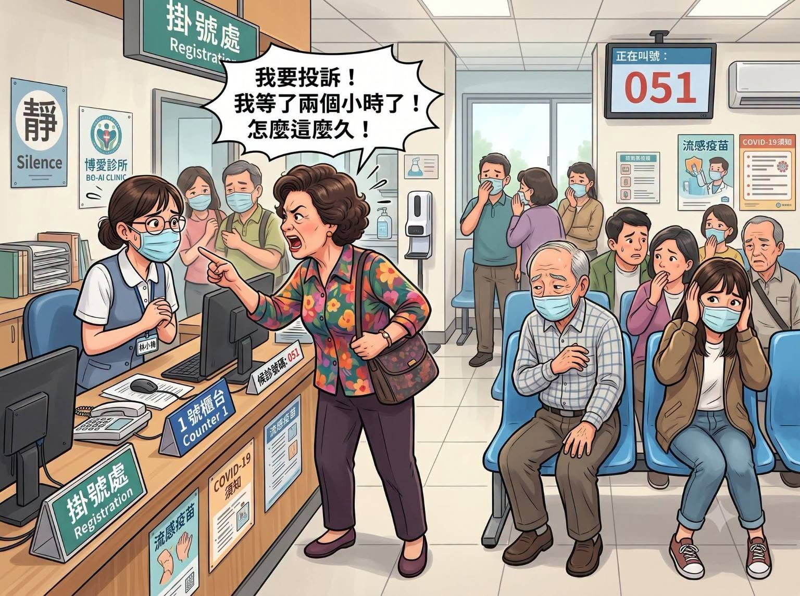

這兩天，讀到一則醫病互動的分享。病人因等候手術時間過久，在網路上表達不滿；醫師則表示，自己原本可以準時下班，因留下協助而延後返家，最後卻感到善意沒有被理解。
等待中的焦慮是真實的，第一線工作者承受的壓力也是真實的。這不是要替任何一方下結論，而是提醒我們：當資訊不完整、情緒又很高時，先理解發生了什麼，往往比立刻指責更能解決問題。
將心比心，不只看見自己的辛苦，也願意理解別人正在承受的重量。
等待背後，可能有看不見的原因
醫療等待可能來自前一台手術延長、急重症優先處理、人力調度或臨時狀況。只從等候時間，並不足以判斷工作人員是否怠慢。
病人有權了解治療進度，也可以透過合適管道反映問題；同時，醫護人員也需要基本的休息、合理工時與被尊重的工作環境。把兩邊的處境都放進來看，才能讓溝通回到事情本身。

老師承擔的，不只是一堂課
老師除了教學，也常要準備教材、批改作業、處理行政、輔導學生、協調衝突，並回應家長的關心。每一次額外協助，都來自專業責任與教育熱忱，但不應被視為沒有上限的供應。
家長關心孩子沒有錯，老師的做法也可以被理性檢視。比較健康的方式，是先了解完整情況、說明具體疑問，再透過正常管道共同找方法，而不是讓情緒先替彼此定罪。
付費取得服務，不等於買斷一個人的時間
醫療
掛號與醫療費用，取得的是專業醫療服務，不代表醫護人員沒有休息與下班的權利。
教育
學費與教育資源，支持的是學習與成長，不代表老師必須隨時回覆或接受無限通融。
財務顧問
顧問費與保險服務，對應的是專業分析與合理服務，不等於買斷顧問全部的私人時間。
尊重專業，也保留提出問題的權利
尊重專業，不代表不能詢問、不能反映或不能申訴。重要的是分清楚「理性詢問」與「情緒指控」：有疑問時描述事實、詢問流程、確認資訊；需要申訴時，使用正式管道並留下紀錄。
同樣地，專業工作者也有責任清楚說明服務範圍、回應時間與緊急處理方式。界線說清楚，不是冷漠，而是讓合作關係能長久。
讓善意能長久，需要雙方共同守住界線
醫師守護健康，老師陪伴學習，財務顧問協助家庭整理未來。每一種專業背後，都是會累、會擔心，也需要生活的人。
善意不該被視為義務，專業也不該被當成無限供應。多一分理解、少一分先入為主，才能讓願意付出的人有力量繼續留下來。
有些議題，不必急著站隊。
先把彼此的處境看完整，再一起找更好的做法。
把照顧、退休與想留給家人的事放在同一張圖上看。